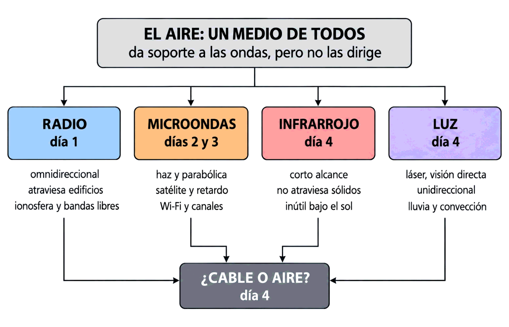

Contenido
1. El mapa de la semana

EL AIRE: un medio de todos, que no dirige nada
│
┌──────────────┬───────────┴───────┬──────────────┐
▼ ▼ ▼ ▼
RADIO MICROONDAS INFRARROJO LUZ
(día 1) (días 2 y 3) (día 4) (día 4)
omnidireccional haz + satélite corto alcance línea recta
atraviesa muros Wi-Fi y canales no sale de la azotea a
habitación azotea
└──────────────┴─────────┬─────────┴──────────────┘
▼
¿CABLE O AIRE? (día 4)En un medio guiado manda el medio; en el aire manda la frecuencia. Y el aire tiene tres propiedades que el cable no tiene: es compartido, es público y depende del tiempo que haga.
2. Día 1 — El aire como medio
| Concepto | Lo esencial |
|---|---|
| Medio no guiado | Da soporte a las ondas pero no las dirige. Manda el espectro de frecuencia y las condiciones atmosféricas |
| Propagación | Como las ondas del agua en un estanque: en todas direcciones, debilitándose y mezclándose |
| Longitud de onda | λ = c / f. Atajo: λ (cm) = 30 / f (GHz). A 2,4 GHz, 12,5 cm; a 5 GHz, 6 cm |
| La regla | Más frecuencia → más velocidad posible y menos alcance |
| Las cuatro propiedades | Área de cobertura limitada por obstáculos · tasa adaptativa · interferencia · seguridad |
| Ondas de radio | Fáciles de generar · largas distancias · penetran edificios · omnidireccionales |
| Baja y alta frecuencia | La baja sigue la curvatura terrestre; la alta se absorbe y rebota en la ionosfera |
| Regulación | Licencia en largas distancias; en cortas, bandas libres sin permiso y sin protección |
3. Día 2 — Microondas y satélite
| Concepto | Lo esencial |
|---|---|
| Microondas | 1 a 10 GHz, unos 10 Mbps según el libro, propagación en línea recta |
| Antena parabólica | Concentra la energía: relación señal/ruido muy alta. Exige alineación precisa |
| Obstáculos | No los atraviesan: hacen falta visión directa y repetidores; 80 km entre ellos |
| Horizonte | d ≈ 4,12 · √h, y el enlace suma los dos horizontes |
| Satélite | Un repetidor muy alto. Retardo de 0,3 s en llegar y volver, según el libro |
| El cálculo | 35 786 km ÷ 300 000 km/s = 119 ms por trayecto → 239 ms extremo a extremo → 477 ms de ida y vuelta |
| Órbitas | GEO 35 786 km y 240 ms · MEO 20 000 km y 135 ms · LEO 550 km y 4 ms |
| Qué sufre | Todo lo interactivo. Las descargas van bien: es latencia, no falta de caudal |
4. Día 3 — Wi-Fi
| Concepto | Lo esencial |
|---|---|
| Qué es | Microondas en la red local, estándar IEEE 802.11, con punto de acceso y adaptadores |
| Estándares | b 11 Mbps · g 54 Mbps · n 600 Mbps · ac 1,3 Gbps · ax varios Gbps. Wi-Fi 4, 5 y 6 son n, ac y ax |
| Tasa adaptativa | Las cifras son nominales. Un cliente lento frena a todos, porque ocupa más tiempo el aire |
| Canales | 13 en Europa, separados 5 MHz: f = 2 412 + 5 · (canal − 1) |
| Solapamiento | Cada canal ocupa 22 MHz: solape = 22 − separación |
| El trío | 1, 6 y 11, a 25 MHz. En Europa también 1, 7 y 13 |
| Compartir o solapar | Mejor compartir: dos redes en el mismo canal se turnan; solapadas, solo hacen ruido |
| 2,4 frente a 5 GHz | 2,4: más alcance y más saturada. 5: más canales y más velocidad, menos alcance |
5. Día 4 — Infrarrojos, luz y comparativa
| Concepto | Lo esencial |
|---|---|
| Infrarrojos | Corto alcance · direccionales · baratos · sin licencia · no atraviesan sólidos, lo que da seguridad · inútiles al sol |
| Ondas de luz | Láser, visión directa, unidireccional: emisor y receptor en cada extremo. Baratas, fáciles y rápidas |
| Sus enemigos | Lluvia, niebla densa y corrientes de convección: falla con buen tiempo |
| Tabla 3.5 | Radio 1 Mbps y 100-1 000 km · microondas 10 Mbps y 80 km · infrarrojo 10 Mbps y 200 m · luz 1 Mbps y 1 km |
| Guiados frente a no guiados | Los guiados ganan en velocidad; los no guiados, en distancia y flexibilidad |
| Las dos preguntas nuevas | ¿Se puede tender cable? y ¿hay visión directa? |
| La regla final | A igualdad de condiciones gana el cable. El aire gana cuando el cable no puede estar |
6. Todas las cifras, juntas
| Dato | Valor | Día |
|---|---|---|
| Velocidad de la luz | 300 000 km/s · 200 000 km/s en fibra | 1 y 2 |
| λ a 2,4 GHz · 5 GHz · 60 GHz | 12,5 cm · 6 cm · 5 mm | 1 |
| Banda de microondas | 1 a 10 GHz | 2 |
| Velocidad de las microondas (libro) | ≈ 10 Mbps | 2 |
| Horizonte de una antena | d ≈ 4,12 · √h | 2 |
| Altura de un satélite GEO | 35 786 km | 2 |
| Retardo GEO extremo a extremo · ida y vuelta | ≈ 239 ms · ≈ 477 ms | 2 |
| Retardo MEO · LEO | ≈ 135 ms · ≈ 4 ms | 2 |
| Canales de 2,4 GHz en Europa | 13, separados 5 MHz | 3 |
| Ancho de un canal | 22 MHz | 3 |
| Frecuencia del canal 1 · 6 · 11 | 2 412 · 2 437 · 2 462 MHz | 3 |
| Velocidades 802.11 b · g · n · ac | 11 · 54 · 600 Mbps · 1,3 Gbps | 3 |
| Tabla 3.5, no guiados | Radio 1 Mbps/1 000 km · micro 10 Mbps/80 km · IR 10 Mbps/200 m · luz 1 Mbps/1 km | 4 |
7. El hilo que une la semana
| Idea | Dónde apareció |
|---|---|
| Más frecuencia, más velocidad y menos alcance | Las longitudes de onda del lunes · el 5 GHz del miércoles · el láser que no atraviesa nada del jueves |
| El medio es de todos | Las bandas libres sin protección · los canales que se pisan · la obligación de cifrar |
| La física no se negocia | El retardo del satélite, que ninguna electrónica baja · el horizonte, que impone repetidores · el Sol, que tapa el infrarrojo |
| Caudal y latencia son cosas distintas | El satélite con 100 Mbps y medio segundo de espera · la tasa adaptativa, que da enlace pero poca velocidad |
| El aire es el último tramo, no la red | Los puntos de acceso van cableados · el radioenlace une dos redes que por dentro son de cobre y fibra |
8. Flashcards de toda la semana
Veinticuatro tarjetas, seis por día. Piensa la respuesta antes de girarla.
Test semanal — Semana 7
24 preguntas · 45 minutos · cinco por día más cuatro de integración
El cronómetro arranca al llegar aquí, al pulsar «Empezar quiz» o al marcar tu primera respuesta. Al corregir verás el desglose por día.
Resultados
Respuestas correctas: 0 / 0
Respuestas incorrectas: 0
Empieza por el día con peor resultado. La hoja repasa los tres cálculos de la semana —longitud de onda, retardo y solapamiento— y termina con un caso que los junta.
→ Ir a la hoja de recuperación (70 min)
Semana 8 — Cableado estructurado, la última del mes: normativa, instalación, canalizaciones, armarios y certificación. Y el viernes, el examen mensual de las cuatro semanas del Mes 2.